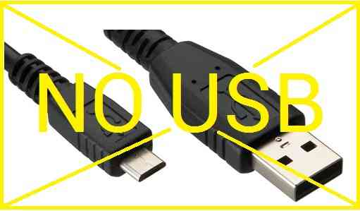
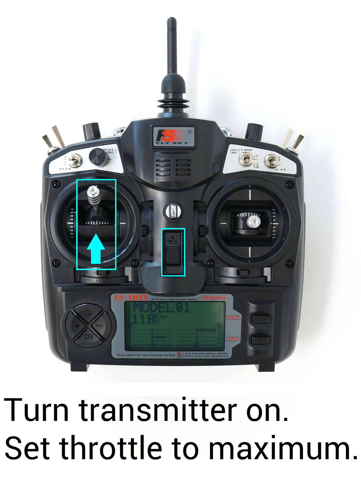
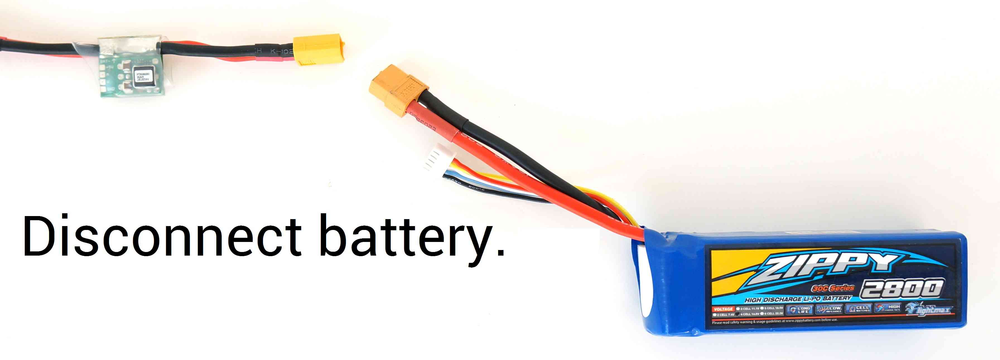
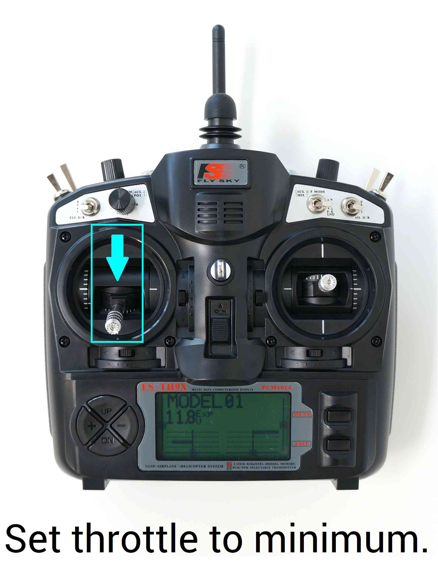

Electronic Speed Controller (ESC) Calibration¶
Electronic speed controllers are responsible for spinning the motors at the speed requested by the autopilot. Most ESCs need to be calibrated so that they know the minimum and maximum pwm values that the flight controller will send. This page provides instructions for calibrating ESCs.
Note
Please complete radio calibration before performing ESC calibration.
About ESC Calibration¶
ESC calibration will vary based on what brand of ESC you are using, so always refer to the documentation for the brand of ESC you are using for specific information (such as tones). “All at once” calibration works well for most ESCs, so it is good idea to attempt it first and if that fails try the “Manual ESC-by-ESC” method.
Refer to PWM, OneShot and OneShot125 ESCs for setup of the ESC protocol (MOT_PWM_TYPE) according to your type of ESC.
Some ESCs like the DJI Opto ESCs do not require and do not support calibration, so skip this page completely.
If you are using a digital esc protocol like DShot or are using CAN ESCs then you also don’t need to calibrate them, so skip this page. The section at the end on ESC settings is still applicable, however.
Some brands of ESC do not allow calibration and will not arm unless you adjust your radio’s throttle end-points so that the minimum throttle is around 1000 PWM and maximum is around 2000. Note that if you change the end-points on your TX you must re-do the Radio Calibration. Alternatively, you may manually set the MOT_PWM_MIN to 1000 and MOT_PWM_MAX to 2000.
Begin this procedure only after you have completed the radio control calibration and Connect ESCs and motors part of the 飞控系统安装 Instructions. Next follow these steps:
Warning
Safety Check!
Before calibrating ESCs, please ensure that your copter has NO PROPS on it and that the autopilot is NOT CONNECTED to your computer via USB and the Lipo battery is disconnected.
{kind=link}
{kind=link}
All at once calibration¶
Turn on your transmitter and put the throttle stick at maximum.
Connect the Lipo battery. The autopilot’s red, blue and yellow LEDs will light up in a cyclical pattern. This means the it’s ready to go into ESC calibration mode the next time you plug it in.

With the transmitter throttle stick still high, disconnect and reconnect the battery.

For Autopilots with a safety switch, push it until the LED displays solid red
The autopilot is now in ESC calibration mode.
Wait for your ESCs to emit the musical tone, the regular number of beeps indicating your battery’s cell count (i.e. 3 for 3S, 4 for 4S) and then an additional two beeps to indicate that the maximum throttle has been captured.
Pull the transmitter’s throttle stick down to its minimum position.
The ESCs should then emit a long tone indicating that the minimum throttle has been captured and the calibration is complete.
If the long tone indicating successful calibration was heard, the ESCs are “live” now and if you raise the throttle a bit they should spin. Test that the motors spin by raising the throttle a bit and then lowering it again.
Set the throttle to minimum and disconnect the battery to exit ESC-calibration mode.
{kind=link}
{kind=link}
{kind=link}
Here is a video demonstrating the process:
Manual ESC-by-ESC Calibration¶
Plug one of your ESC three-wire cables into the throttle channel of the RC receiver. (This is usually channel 3.)
Turn on the transmitter and set throttle stick to maximum (full up).
Connect the LiPo battery
You will hear a musical tone then two beeps.
After the two beeps, lower the throttle stick to full down.
You will then hear a number of beeps (one for each battery cell you’re using) and finally a single long beep indicating the end points have been set and the ESC is calibrated.
Disconnect battery. Repeat these steps for all ESCs.
If it appears that the ESC’s did not calibrate then the throttle channel on the transmitter might need to be reversed.
If you are still having trouble after trying these methods (for example, ESCs still beep continuously) try lowering your throttle trim 50%.
You can also try powering your ArduPilot board via the USB first to boot it up before plugging in the LiPo.
Semi Automatic ESC-by-ESC Calibration¶
Connect to the autopilot from a ground station such as the Mission Planner and set the ESC_CALIBRATION parameter to 3
Disconnect the battery and USB cable so the autopilot powers down
Connect the battery
The arming tone will be played (if the vehicle has a buzzer attached)
If using an autopilot with a safety button (like the Pixhawk) press it until it displays solid red
You will hear a musical tone then two beeps
A few seconds later you should hear a number of beeps (one for each battery cell you’re using) and finally a single long beep indicating the end points have been set and the ESC is calibrated
Disconnect the battery and power up again normally and test as described below
Testing¶
Once you have calibrated your ESCs, you can test them by plugging in your LiPo. Remember: no propellers!
Ensure your transmitter’s flight mode switch is set to “Stabilize Mode”.
Give a small amount of throttle. All motors should spin at about same speed and they should start at the same time. If the motors do not all start at the same time and spin at the same speed, the ESC’s are still not properly calibrated.
Disarm your copter
Notes / Troubleshooting¶
The All-at-once ESC calibration mode simply causes the autopilot to pass through the pilot’s throttle directly through to the ESCs. If you power up the autopilot while in this mode you’ll send the same PWM signal to all the ESCs. That’s all it does. Many ESCs use full throttle at startup to enter programming mode, full throttle postition is then saved as the upper end point and when you pull the throttle down to zero, that position is saved as the lower end point.
If after calibration your motors do NOT spin same speed nor start at the same time, repeat the calibration process. If you tried the auto calibration above and it didn’t work or the ESCs do not drive the motors identically, try the manual calibration method described above. That should work almost every time. (Rarely after a full manual calibration you will also need to do an additional final automatic calibration).
Finally, there are a huge number of brands and types of ESCs available and some of them do not adhere to the normal programming conventions (sometimes even though they claim to) and they may simply not work with ArduPilot the way it is now. This is an unfortunately necessary but true disclaimer.
Recommended ESC settings as follows:¶
Brake on stop: OFF
Active braking/”Damped light”: ON (Also known as “Non Damped mode” set to OFF)
Low voltage protection: OFF (alternatively, you can set battery type to Ni-xx(NiMH or NiCd) (even if you’re using Li-po batteries because this setting reduces the likelihood that the ESC’s low voltage detection will turn off the motors)
CutOff Mode: Soft-Cut (Default)
CutOff Threshold: Low
Start Mode: Normal (Default)
Timing: MEDIUM